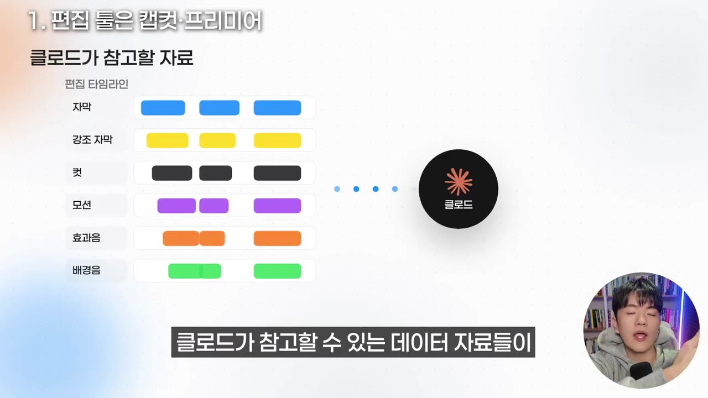
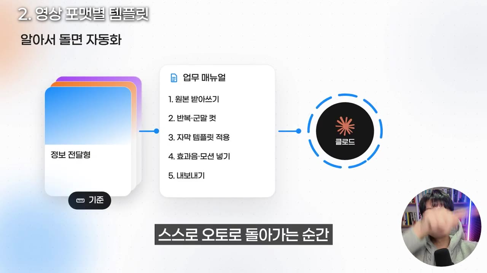
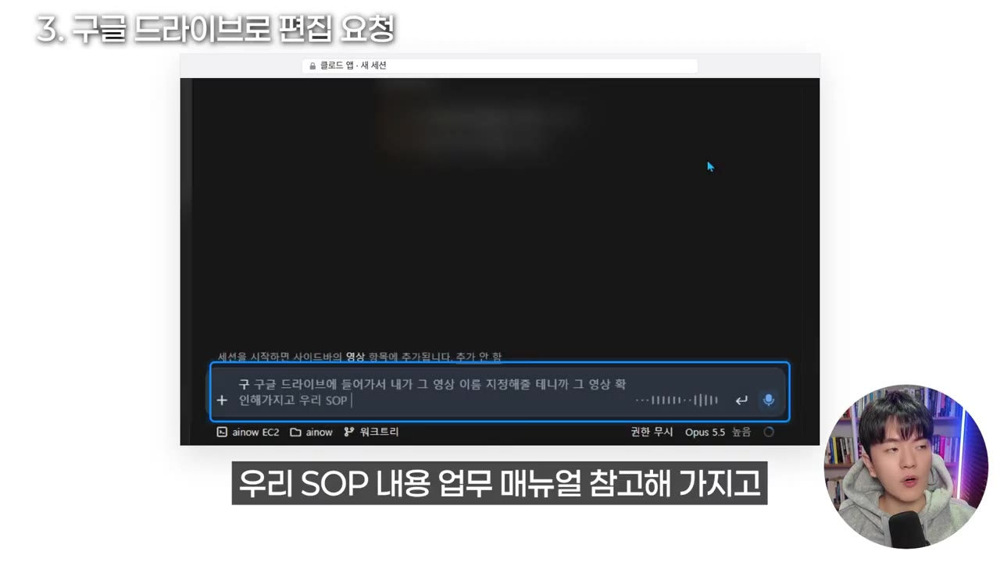

“100% 영상 제작 자동화” 클로드코드로 영상 편집 이대로만 따라하세요 (2편)
▶ 원본 영상 보기한눈에 보기
- 클로드 코드로 영상 편집을 자동화하려면 편집 도구는 검증된 캡컷(CapCut)이나 프리미어 프로를 쓰는 것이 좋다고 강조한다.
- 영상 종류별 템플릿(기준 영상)을 만들어 두어야 AI가 같은 품질로 편집할 수 있다.
- 템플릿을 설명하는 편집 업무 매뉴얼(SOP)을 마크다운·노션 등 문서로 만들어 클로드 코드 스킬로 남긴다.
- 원본 영상을 구글 드라이브에 올리고 폴더를 지정해 요청하면, 클로드가 영상을 받아 자막 확인·편집까지 진행한다.
- 실제 테스트에서 34초짜리 영상 편집에 약 40분이 걸렸고, 루틴 기능으로 폴더를 주기적으로 확인하게 하면 업로드만으로 편집이 돌아가는 구조를 만들 수 있다고 한다.
이런 분께 도움이 됩니다
- 반복되는 영상 제작·편집 작업을 클로드 코드로 줄이고 싶은 콘텐츠 제작자, 마케터, 1인 사업자.
- 자동화의 구조(도구 → 템플릿 → 매뉴얼 → 스킬 → 루틴)를 한 번에 잡고 싶은 분.
핵심 내용
편집 도구는 캡컷·프리미어 프로로
- 영상 편집은 캡컷이나 프리미어 프로 같은 편집 특화 도구로 해야 한다고 강하게 권한다. 다른 도구는 비추천이다. (1:35)
- 이유: 자막, 모션, 효과음 같은 레이어가 도구 안에 세분화되어 남고, 이 데이터가 많을수록 클로드가 참고할 자료가 다양하고 정확해진다.
- 근거로 제시한 것: 유튜브 구독자 약 10만 명, 팀의 릴스·캐러셀 월 발행량 약 50개, 주변 사례도 결국 같은 방식으로 귀결된다는 경험.
- 1편에서 설치한 오픈소스 3가지와 도구(클로드 코드, 캡컷 또는 프리미어 프로)는 필수다. 1편을 먼저 보라고 안내한다. (1:01)
💡 검증된 편집 도구가 만든 레이어 데이터가 곧 클로드의 학습 자료다.

영상 포맷별 템플릿과 업무 매뉴얼
- 영상 종류(브이로그, 1·2·3번 정보 전달형, 100% AI 영상 등)마다 기준이 되는 템플릿이 있어야 한다. (2:47)
- 템플릿 + 업무 매뉴얼을 AI가 참고해 스스로 돌아가는 순간이 자동화다. (3:29)
- 템플릿 편집본에는 효과, 자막, 중요 부분 노란색 강조, 폰트 디자인까지 레이어별로 들어 있어야 클로드가 "이런 영상은 이런 기준으로 만든다"를 학습한다.
- 매뉴얼 형식은 마크다운 파일, 노션, 일반 문서 모두 가능하다.
- 템플릿과 같은 포맷이 없는 영상은 결과 품질이 낮아질 가능성이 있다고 본인도 인정한다.
💡 AI가 자동으로 해 주는 것이 아니라, 기준과 매뉴얼을 줘야 자동화가 된다.

구글 드라이브로 편집 요청
🔁 편집 요청 순서
- 오픈소스 설치
- 영상 업로드
- 폴더·영상 지정
- SOP 참고 요청
- 자동 편집

실제 편집 결과
- 클로드가 구글 드라이브에서 원본을 찾고, 앞서 만든 스킬·SOP·위키를 참고한다. (6:41)
- 받아쓰기로 스크립트를 만들고 반복되는 말을 잘라 낸 뒤 매뉴얼 번호에 따라 편집한다. (7:09)
- 34초짜리 영상 편집에 약 40분이 걸렸다. (7:23)
- 템플릿과 포맷이 맞지 않는 영상으로 테스트했는데도, 결과를 템플릿 영상과 비교해 "퀄리티 좋다"고 평가한다.
- 업로드·내보내기까지 자동화하면, 영상을 드라이브에 올리기만 해도 일관된 톤·자막·효과의 영상이 계속 만들어진다고 말한다.
확장 활용
- 클로드 코드의 루틴 기능으로 1~2시간마다 드라이브 폴더를 확인하게 하면, 올리는 순간 편집이 자동으로 시작된다. (9:14)
- 완성 영상의 스크립트를 쓰레드·블로그 등 텍스트 마케팅 콘텐츠로 파생할 수 있다.
- 화자는 앱용 콘텐츠·이미지 대량 생성 시스템도 테스트 중이라고 언급한다. (자막상 구체 내용 불분명)
따라 해보기
준비물
- 클로드 코드, 캡컷 또는 프리미어 프로, 구글 드라이브, 1편에서 안내한 오픈소스 3가지(이름은 이번 영상에 안 나옴).
- 기준이 될 편집 완성본 영상과 업무 매뉴얼 문서.
- 소요 시간: 설정 후 짧은 영상 한 편 편집에 약 40분(화자 테스트 기준).
단계별 방법
🔁 편집 자동화 구축 순서
- 1편 설치
- 템플릿 제작
- 매뉴얼 작성
- 스킬 저장
- 영상 업로드
- 편집 요청
- 루틴 설정
- 11편 설치
1편 영상을 보고 오픈소스 3가지와 보조 도구를 설치한다.
- 2템플릿 제작
영상 종류별로 캡컷·프리미어 편집본을 만든다. 자막, 모션, 효과음, 폰트를 레이어로 정리한다.
- 3매뉴얼 작성
템플릿의 편집 방식을 설명한 문서(MD·노션 등)를 만든다.
- 4스킬 저장
템플릿과 매뉴얼을 클로드 코드 스킬로 남긴다. (9:14)
- 5영상 업로드
원본을 구글 드라이브 폴더에 올린다.
- 6편집 요청
폴더와 영상 이름을 알리고 SOP를 참고해 캡컷으로 편집하라고 요청한다.
- 7루틴 설정
1~2시간마다 폴더를 확인하도록 루틴을 건다. (선택)
따라 할 수 있는지 점검
- ✅ 바로 따라 할 수 있음: 전체 구조(도구 → 템플릿 → 매뉴얼 → 스킬 → 루틴)와 요청 문장의 형태.
- ⚠️ 1단계 「1편 설치」: 오픈소스 3가지의 이름·설치법이 이번 영상에 없음 → 1편 영상 확인.
- ⚠️ 2~3단계 「템플릿·매뉴얼」: 매뉴얼에 들어갈 항목, 스킬 만드는 법, 템플릿 편집본의 구체적 구성이 안 나옴 → 영상 2:47~4:08 화면 확인, 클로드 코드 공식 문서에서 스킬 검색 (보충).
- ⚠️ 6단계 「편집 요청」: 클로드가 구글 드라이브에 접근하는 연동 방법(커넥터·인증)이 언급되지 않음 → 1편이나 설명란 자료 확인.
- ⚠️ 7단계 「루틴 설정」: "왼쪽 상단의 루틴 기능"이라고만 말하고 설정법은 생략됨 → 클로드 코드 화면에서 직접 확인.
- ⚠️ 비용: 캡컷·프리미어 프로의 유료 기능 필요 여부와 클로드 사용량은 언급 없음.
- ❓ "무료로 만들어 준다"고 하지만 실제로는 클로드 사용 요금과 40분의 처리 시간이 든다. 포맷이 맞지 않는 영상인데 결과가 좋다는 평가는 화자의 주관이다.
확인 방법
- 편집본에 템플릿과 같은 자막 스타일, 강조 색, 효과음, 모션이 적용되었는지 비교한다. (7:41)
막히면
- 템플릿에 없는 포맷의 영상은 결과 품질이 낮을 수 있으니, 그 종류의 템플릿을 먼저 추가한다. (4:35)
기억할 숫자·인용
- 34초 영상 편집에 약 40분 소요.
- 구글 드라이브 폴더 확인 주기: 1~2시간마다(루틴).
- 필수 도구: 오픈소스 3가지 + 클로드 코드 + 캡컷(또는 프리미어 프로) = 6가지.
- 화자 채널: 구독자 거의 10만 명, 팀 릴스·캐러셀 월 약 50개 발행.
생각해볼 점
- 화자는 컨설팅·강의를 운영하는 입장이라 "검증된 도구만"이라는 주장에 상업적 이해관계가 있을 수 있다. 다른 도구와 비교한 근거는 제시되지 않았다.
- 시연 결과는 템플릿과 포맷이 맞지 않는 영상 하나이고, 편집 품질을 객관적으로 보여 주는 지표는 없다.
- 34초 영상에 40분이 걸린다면, 영상 수가 많을 때 처리 시간과 사용량 비용을 따져 봐야 한다.
바로 해볼 일
- 1편 영상을 보고 필요한 오픈소스·도구 목록 확인하기
- 자주 만드는 영상 종류 하나를 정해 캡컷으로 기준 편집본 만들기
- 그 편집본의 편집 규칙(자막 스타일, 강조 색, 효과)을 마크다운 문서로 적어 보기